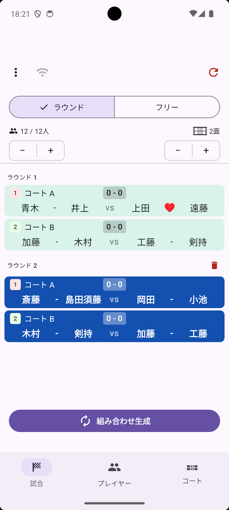
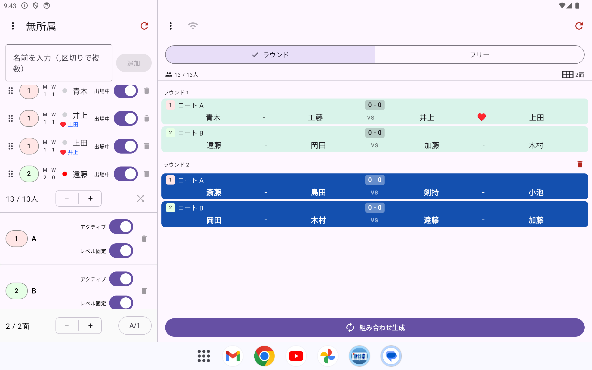

くみあぷ（PairGen）
v1.2.31対応 iOS v1.35.0
⚠️ This help is available in Japanese only. Please use your browser's auto-translate feature.
くみあぷ（PairGen）はバドミントン・テニスなどのダブルス競技向けに、組み合わせを自動生成する Android と iOS のアプリです。参加人数とコート数を設定するだけで、重複を最小限に抑えた組み合わせをすぐに生成できます。スコアの記録や結果のシェアのほか、Google ドライブを使った出欠管理との連動にも対応しています。

スマートフォン

タブレット
ダウンロード

iOS版のヘルプはこちら: https://ttrsato.github.io/pairgen-help/home.html
使い方動画
※ iOS 版の紹介動画ですが、基本的な操作は Android 版でも同じです。
使い方動画の一覧を見る →
主な機能
「くみあぷ」は、バドミントン・テニスのダブルス練習会やサークル・部活動の運営を手軽にする、組み合わせ自動生成＆スコア管理アプリです。参加人数とコート数を入力するだけで、公平な対戦表・コート分けを瞬時に作成できます。
組み合わせ・対戦表を自動生成
参加人数とコート数を入力するだけで、公平なローテーションでペアと対戦表を自動生成します。
- ラウンドモード：全員が均等に組み合わさるよう自動でローテーション管理
- フリーモード：コートが空き次第、待たずに次の組み合わせを生成
- 生成した組み合わせは、2人をタップするだけで手で組み替え可能
- レベル（強さ）設定でペア分けのバランスを調整
- 固定ペアの指定にも対応（カップルや実力差のあるペアを固定したい場合に）
- ミックスダブルス対応
スコア管理も1つのアプリで完結
組み合わせを生成したら、そのままスコアもつけられます。
- タップ操作だけの得点入力
- 元に戻す（アンドゥ）機能
- サーブ権・コートエンドの切り替え表示
- バドミントン公式ルールに準拠した自動勝敗判定
- ゲーム終了トグルとスコア履歴の記録
休憩管理・プレイヤー管理
- 出場中／休憩中のステータス管理で、急な欠席・追加にも柔軟に対応
- プレイヤー名による管理（番号を覚える必要なし）
- プレイヤー写真の登録
- グループに入れたメンバーは自動で保存され、グループごとに呼び出し
- 登録メンバーを最終参加日つきで一覧し、長く参加していない人をまとめて整理できる「メンバー管理」
- プレイヤー一覧に現在出場中かどうかを示す丸印を表示し、タップして「ピン留め」すると次の組み合わせで最優先に出場
- 組み合わせとプレイヤー一覧を1画面に並べる分割表示（スマートフォン）。試合中の出場・休憩の切り替えやレベル変更をその場で操作
- 一覧の文字を大きく表示（タブレット）。コートから離れた場所に置いたままでも組み合わせを読み取れます
- メンバー一覧を CSV ファイルとして書き出し／読み込み（機種変更時のデータ移行や、Excel・Numbers での一括編集に）
コート管理
データの共有
- Android共有シート経由でセッション（プレイヤー・組み合わせ）を他端末に共有
- 試合結果をメールで送信
- Google スプレッドシートで集めた参加者の出欠を、プレイヤー一覧に取り込み（Google スプレッドシート連携）
他の端末からも見られるサーバー機能（試験的）
試合タブからサーバーを起動すると、同じWi-Fiに接続した他の携帯・タブレットのWebブラウザから組み合わせ・プレイヤー一覧の閲覧やスコア入力が可能です。会場の別の場所からでも進行状況を確認できます。
こんな場面で活躍します
- バドミントンサークル・部活動の練習試合の組み合わせ決め、対戦表作成
- 大会や練習会でのコート割り振り・休憩管理・スコア記録
- 急な欠席・追加にも柔軟に対応できるダブルスのローテーション管理
シンプルな操作で、毎回の「誰と誰が組むか」「どのコートで何点か」の管理から解放されます。日本語・英語・韓国語・中国語（簡体字/繁体字）・インドネシア語に対応しています。
iOS版との違い
くみあぷには iOS 版（PairGen）もあります。基本機能は共通ですが、以下の点が異なります。
- Apple Watch連携なし（Wear OS版は未実装）
- 音声入力によるプレイヤー名登録なし
- メンバーと写真の iCloud 同期なし（Android 版は端末内に保存します）
- プレイヤー一覧の並べ替えは、行の並べ替えハンドルを長押し&ドラッグする方式（iOS版は行を直接長押し）。削除や組み合わせの組み替えもアイコンタップ（iOS版はスワイプ）
- 試合結果メール本文は英語のみ（UI本体は多言語対応）
バージョン 1.2.31 更新内容（v1.2.30 からの変更点）
✨
グループを読み込むとき、今のプレイヤーに「追加」できるようになりました。「入れ替え」と選び分けられます。（
プレイヤータブ）
- 同じ名前のプレイヤーがいると、名前が紫色になり、⚠ マークが付くようになりました（iOS反映）
- 中身が空のスプレッドシートを読み込んでも、プレイヤー一覧が消えないようになりました（iOS反映）
- ゲームポイントの最初の設定を 21 点から 15 点にしました。すでに設定している方は、そのままです（iOS反映）
Google スプレッドシート（出欠 Web アプリ） v1.1.0 更新内容
- 読み込みに時間がかかったときは、自動で 1 回やり直すようになりました
- それでも読み込めないときは、「読み込めませんでした」と表示されるようになりました
詳しくはGoogle スプレッドシート連携、バージョンの確認方法は管理者の作業をご覧ください。
フィードバック
バグ報告・ご意見は Google Play のレビューまたは X（旧 Twitter）@ttrsato までお寄せください。